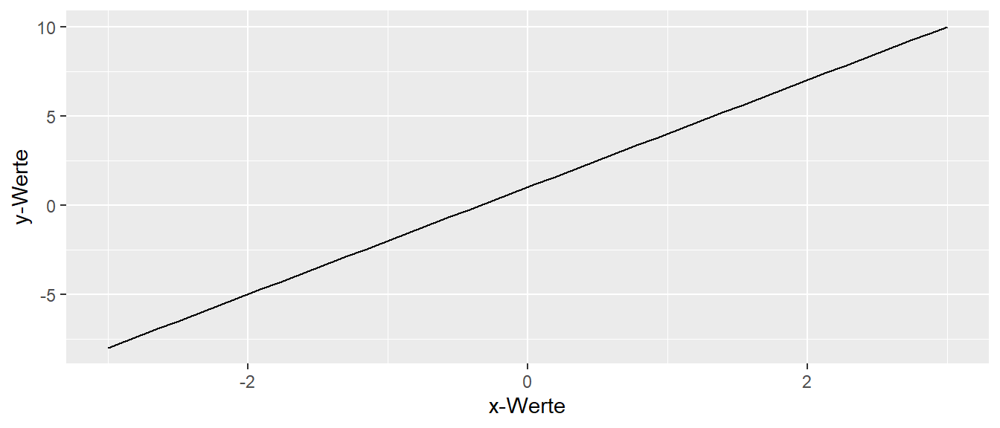
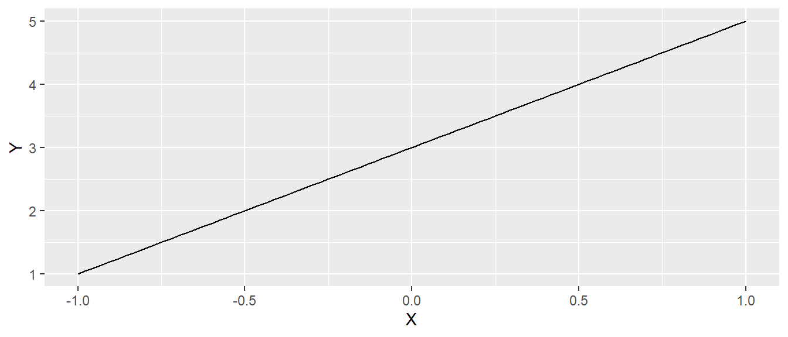
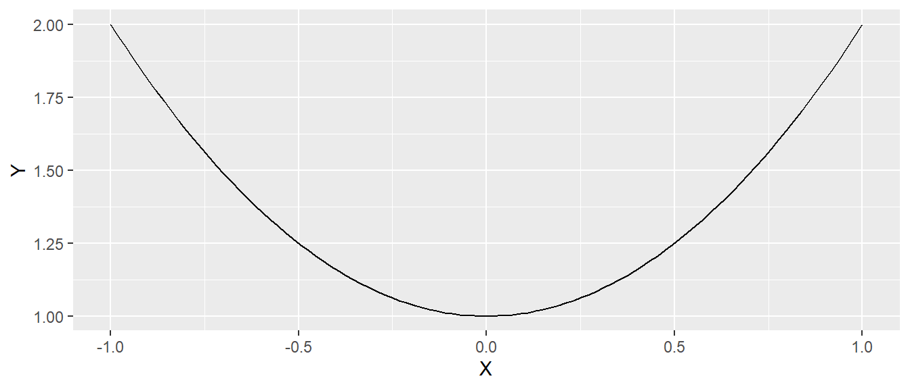
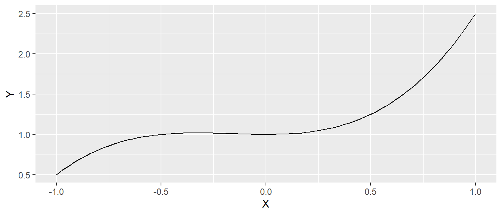
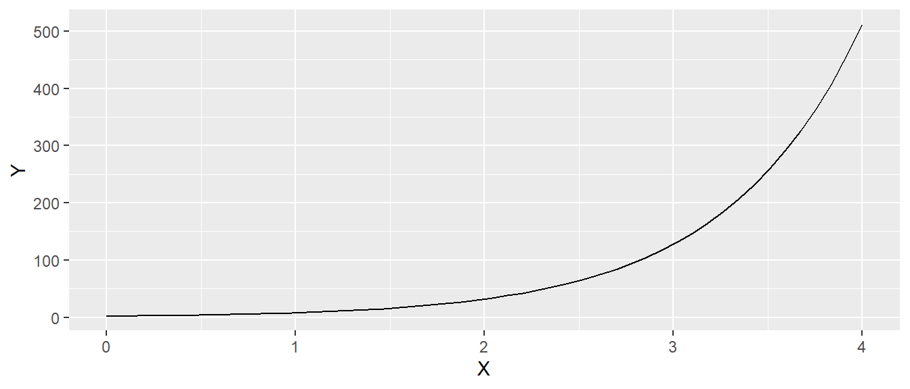
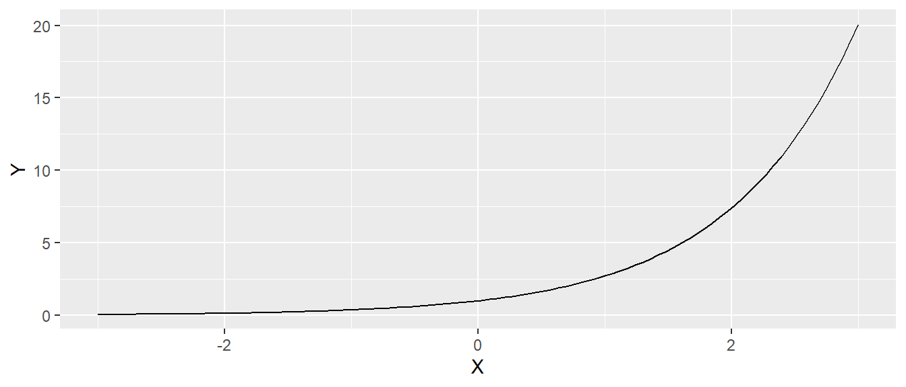
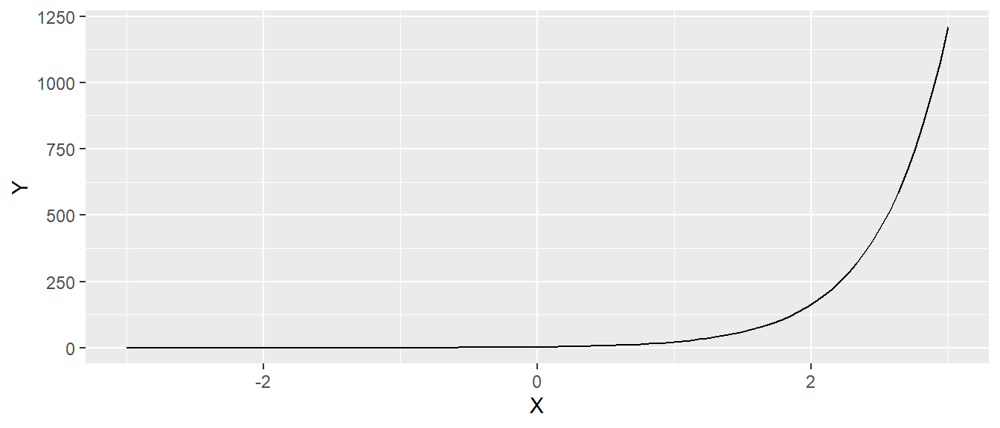
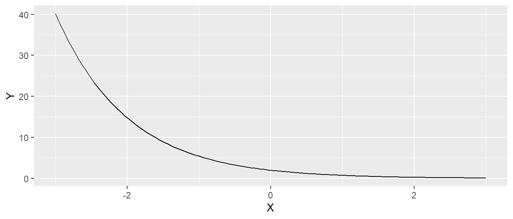

| \(i\) | \(x_i\) |
|---|---|
| 1 | 10 |
| 2 | 20 |
| 3 | 30 |
| 4 | 35 |
| 5 | 40 |
Anhang A — Mathematische Grundlagen
A.1 Rechenregeln basics
Hier eine kurze Wiederholung der üblichen Rechenregeln, die aus der Schule bekannt sein sollten. Dies sind einmal die Klammer vor Punkt vor Strich regeln
\[\begin{align*} 1 + 3 \times 2 &= 7 \\ 7 + 12 / 4 &= 10 \\ (3 + 7) / 5 + 1 &= 3 \end{align*}\]
Und das Distributivgesetz zum ausmultiplizieren bzw. zusammenfassen von Klammern.
\[\begin{align*} a \times (b + c) &= a\times b + a\times c \\ 2 \times (3 + 4) &= 2 \times 3 + 2 \times 4 \\ 10 a + a b &= a (10 + b) \\ (a + b)^2 &= a^2 + 2ab + b^2 \\ (a + b)\times (a - b) &= a^2 - b^2 \end{align*}\]
Was auch noch bekannt sein sollte, sind die Binomischen Formeln.
\[\begin{align*} (a+b)^2 &= a^2 + 2ab + b^2 \\ (a-b)^2 &= a^2 - 2ab + b^2 \\ (a+b)(a-b) &= a^2 - b^2 \end{align*}\]
Ein immer wiederkehrender Operator in der Statistik ist das Summenzeichen \(\sum\). Das Summenzeichen hat üblicherweise einen Laufindex der unter dem Summenzeichen steht zusammen mit einem Anfangswert. Über dem Summenzeichen steht der Endwert. Für den Laufindex werden meistens die Buchstaben \(i,j,k\) verwendet. Dies ist aber keine feste Regel sondern jeder Buchstabe ist möglich. Für jeden Wert des Laufindex wird ein Summand erstellt. Zum Beispiel.
\[\begin{equation*} \sum_{i=0}^{2} i = (i=0) + (i=1) + (i=2) = 0 + 1 + 2 = 6 \end{equation*}\]
Hier ist der Laufindex \(i\) mit dem Startwert \(i=0\) und dem Endwert \(i=2\). Die Index durchläuft alle Ganzzahlen zwischen dem Start- und dem Endwert. In den meisten Fällen wird der Laufindex nicht direkt in den Summanden geschrieben sondern es wird ein bestimmte Menge von weiteren Werten damit indiziert. Sei zum Beispiel eine Menge von sechs Datenpunkte z.B. \(\{10, 20, 30, 35, 40\}\) gegeben. Dann könnten diese Datenpunkte mittels einer Variablen beispielsweise dem Buchstaben \(x\) repräsentiert werden und die einzelnen Werte mit Hilfe eines Laufindexes bestimmt werden (siehe Tabelle A.1).
Soll nun über alle Datenpunkte summiert werden dann kann dies wie folgt mittels des Zusammenzeichen dargestellt werden.
\[\begin{equation*} \sum_{i=1}^5 x_i = 10 + 20 + 30 + 35 + 40 = 135 \end{equation*}\]
Für das Summenzeichen gelten, es sich letztendlich nur um Addition handelt, die gleichen Regeln wie bei der einfachen Summation. Dementsprechend ergeben sich die folgenden Regeln: \[\begin{align} \sum_{i=0}^{n}(a_i+b_i) &= \sum_{i=0}^{n}a_i + \sum_{i=0}^{n}b_i \\ \sum_{i=0}^{n}a \times b_i &= a\sum_{i=0}^{n}b_i \label{eqn:asum} \\ \sum_{k=1}^{n} \frac{a_k}{n} &= \frac{1}{n}\sum_{k=1}^{n} a_i = \frac{1}{n}(a_1 + a_2 + \ldots + a_n) \\ \sum_{i=1}^{n} a &= a + a + \ldots + a = n \times a \label{eqn:consum} \end{align}\]
Neben dem Summenzeichen, kommt auch immer wieder mal das Produktzeichen zur Anwendung. Wie der Name schon vermuten lässt, wird bei dem Produktzeichen die Addition durch die Multiplikation ersetzt.
\[\begin{equation} \prod_{i=0}^n x_i = x_1 \times x_2 \times \cdots \times x_n \end{equation}\]
Im Umgang mit Exponentialfunktionen sind die folgenden Rechenregeln zu beachten.
\[\begin{align*} a^m \cdot a^n &= a^{m+n} \\ \frac{a^m}{a^n} &= a^{m-n}, \quad (a \neq 0) \\ (a^m)^n &= a^{m \cdot n} \\ (a \cdot b)^n &= a^n \cdot b^n \\ \left(\frac{a}{b}\right)^n &= \frac{a^n}{b^n}, \quad (b \neq 0) \\ a^0 &= 1, \quad (a \neq 0) \\ a^{-n} &= \frac{1}{a^n}, \quad (a \neq 0) \\ a^1 &= a \end{align*}\]
Dazu auch die Rechenregeln für den Logarithmus.
\[\begin{align*} \log_b (x \cdot y) &= \log_b (x) + \log_b (y) \\ \log_b \left(\frac{x}{y}\right) &= \log_b (x) - \log_b (y) \\ \log_b (x^n) &= n \cdot \log_b (x) \\ \log_b (1) &= 0 \end{align*}\]
A.2 Funktionen
A.2.1 Lineare Funktion
Die einfachste Funktion nach der konstanten Funktion ist die Gerade. Die Funktion der Gerade setzt sich aus dem \(y\)-Achsenabschnitt \(a\) der Steigung \(b\) zusammen.
\[\begin{equation} y = a + bx \end{equation}\]
Aus der Schule dürfte dies als Punkt-Steigungsform (vielleicht in der Form \(y = mx + b\)) bekannt sein. Bei einer positiven (negativen) Steigung (\(a > 0\)) steigen (fallen) die \(y\)-Werte gegen \(\infty\) (\(-\infty\)) wenn die \(x\)-Werte gegen \(\infty\) (\(-\infty\)) gehen. In Abbildung A.1 ist der Graph der Funktion \(y = 3x + 1\) abgetragen.

In Abbildung A.1 ist zu erkennen, dass auf Grund der positiven Steigung \(b = 3\) die \(y\)-Werte größer werden, umso größer die \(x\)-Werte werden. Der Zuwachs der \(y\)-Werte ist dabei konstant. Wenn \(x\) um eine Einheit vergrößert wird, dann vergrößert sich \(y\) um \(3\) Einheiten.
Die Gerade kann als eine Funktion angesehen welche \(x\)-Werte auf \(y\)-Werte abbildet. \(y = a + bx\) kann daher auch als \(f(x) = a + bx\) interpretiert werden. Bzw. im konkreten Fall von Abbildung A.1 als \(f(x) = 3x + 1\). D.h. wenn ich einen \(x\)-Wert in die Funktion \(f(x)\) einsetzte, wird der entsprechenden \(y\)-Wert erhalten, z.B. \(f(2) = 3 \times 2 + 1 = 7\).
A.2.2 Polynome
Ein Polynom ist ein mathematischer Ausdruck, der aus einer Summe von mehreren Termen besteht, wobei jeder Term aus einer Konstanten (dem Koeffizienten) und einer oder mehreren Variablen, die mit einer Potenz versehen sind, besteht. Ein Beispiel ist die Funktion:
\[\begin{equation*} 3x^2 + 2x - 5 \end{equation*}\]
Die höchste Potenz der Variable bestimmt den Grad des Polynoms; in diesem Fall ist der Grad 2, da \(x^2\) die höchste Potenz ist. Polynome der ersten drei Grade haben eigene Bezeichnungen.
- Lineares Polynom: Ein Polynom vom Grad 1, z.B. \(2x + 3\). Der Graph ist immer eine Gerade und daher ist eine lineare Funktion auch ein Polynom 1. Grades.
- Quadratisches Polynom: Ein Polynom vom Grad 2, z.B. \(x^2 - 4x + 4\). Der Graph ist eine Parabel.
- Kubisches Polynom: Ein Polynom vom Grad 3, z.B. \(x^3 + x - 6\). Der Graph hat eine geschwungene Form mit möglichen Wendepunkten.



A.2.3 Exponentialfunktion
Eine Exponentialfunktion ist eine mathematische Funktion der Form:
\[\begin{equation*} f(x) = a \cdot b^x \end{equation*}\]
Der Term \(a\) ist eine Konstante während \(b\) als Basis bezeichnet wird. Die Basis \(b\) ist eine positive Zahl, die größer als null ist und bestimmt, wie schnell die Funktion wächst oder abnimmt. Wenn \(b>1\) gilt, dann wächst die Funktion exponentiell, was bedeutet, dass die Funktion immer schneller ansteigt. Wenn \(0< b<1\), sinkt die Funktion exponentiell, was bedeutet, dass die Funktion immer langsamer abnimmt.
Exponentialfunktionen werden oft verwendet, um Wachstum oder Zerfall zu beschreiben, wie z. B. das Wachstum einer Bakterienkultur, das Bevölkerungswachstum oder den radioaktiven Zerfall. Ein charakteristisches Merkmal von Exponentialfunktionen ist, dass sich der Wert bei einem festen Abstand auf der x-Achse immer um den gleichen Faktor ändert, was zu einem sehr schnellen Anstieg oder Abfall führen kann. Bei Beispiel für eine exponentiellen Funktion könnte z.B. \(f(x) = 2 \cdot 4^x\) sein.

Eine zentrale Rolle in der Statistik, wie auch in der restlichen Mathematik, spielt die Exponentialfunktion zur Basis \(e\). \(e\) ist die sogenannte Euler’sche Zahl und hat ungefähr den Wert \(e \approx 2,718\). Die Umkehrfunktion der \(e\)-Funktion \(f(x) = e^x\) wird als der natürliche Logarithmus \(f(x) = ln(x) = log_{e}(x)\). Es gilt.
\[\begin{equation*} ln(e^x) = x \end{equation*}\]
In der Statistik kommen die \(e\)-Funktion oft in der folgenden Form vor:
\[\begin{equation*} f(x) a \cdot e^{bx} \end{equation*}\]
Hierbei ist \(a\) der Wert den die Funktion für \(x = 0\) einnimmt, also der \(y\)-Achsenabschnitt während die konstante \(b\) die Steigung verändert und \(b\) positive und negative Werte annehmen kann.



A.3 Extremwerte einer Funktion
A.4 Vektoren
A.5 Matrizen
Eine Matrix ist eine rechteckige Anordnung von Zahlen die in Zeilen und Spalten angeordnet sind. Matrizen werden häufig in der Statistik, verwendet, um lineare Gleichungssysteme darzustellen, Transformationen durchzuführen oder Daten zu organisieren.
Eine Matrix mit \(m\) Zeilen und \(n\) Spalten wird als \(m \times n\)-Matrix bezeichnet. Dies wird als die Dimension der Matrix bezeichent. Die Elemente einer Matrix werden durch zwei Indizes angegeben: der erste Index steht für die Zeile, der zweite für die Spalte. Ein Beispiel für eine \(2 \times 2\)-Matrix könnte zum Beispiel sein:
\[\begin{equation*} A = \begin{pmatrix} a_{11} & a_{12} \\ a_{21} & a_{22} \end{pmatrix} \end{equation*}\]
Matrizen können mittels spezieller Operatoren verarbeitet werden. Den einfachste Operation stellt die Addition dar. Zwei Matrizen gleicher Dimensionen, d.h. mit der gleichen Anzahl von Zeilen und Spalten können elementweise addiert werden. Elementweise bedeutet das jedes Element in der einen Matrize mit dem Element an der gleichen Position der anderen Matrix addiert wird.
\[\begin{equation*} A + B = \begin{pmatrix} a_{11} + b_{11} & a_{12} + b_{12} \\ a_{21} + b_{21} & a_{22} + b_{22} \end{pmatrix} \end{equation*}\]
Ein weiterer Operator ist die Skalarmultiplikation. Bei der Skalarmultiplikation wird jedes Element einer Matrix wird mit einer Zahl (Skalar) multipliziert.
\[\begin{equation*} k \cdot A = \begin{pmatrix} k \cdot a_{11} & k \cdot a_{12} \\ k \cdot a_{21} & k \cdot a_{22} \end{pmatrix} \end{equation*}\]
Ein zentraler Operator ist die Matrixmultiplikation. Das Produkt zweier Matrizen entsteht durch die Multiplikation der Zeilen der ersten Matrix mit den Spalten der zweiten Matrix.
\[\begin{gather*} \begin{bmatrix} a_{11} & a_{12} & \dots & a_{1n} \\ a_{21} & a_{22} & \dots & a_{2n} \\ \vdots & \vdots & \ddots & \vdots \\ a_{m1} & a_{m2} & \dots & a_{mn} \end{bmatrix} \times \begin{bmatrix} b_{11} & b_{12} & \dots & b_{1p} \\ b_{21} & b_{22} & \dots & b_{2p} \\ \vdots & \vdots & \ddots & \vdots \\ b_{n1} & b_{n2} & \dots & b_{np} \end{bmatrix} = \begin{bmatrix} c_{11} & c_{12} & \dots & c_{1p} \\ c_{21} & c_{22} & \dots & c_{2p} \\ \vdots & \vdots & \ddots & \vdots \\ c_{m1} & c_{m2} & \dots & c_{mp} \end{bmatrix} \\ \text{mit } c_{ij} = a_{i1}b_{1j} + a_{i2}b_{2j} + \dots + a_{in}b_{nj} \text{ für } 1 \leq i \leq m \text{ und } 1 \leq j \leq p. \end{gather*}\]
Etwas übersichtlicher mit einem einfachen Beispiel.
\[ \begin{matrix} & \begin{pmatrix} b_1 & b_2 \\ b_3 & b_4 \end{pmatrix} \\ \begin{pmatrix} a_1 & a_2 \\ a_3 & a_4 \\ \end{pmatrix} & \begin{pmatrix} a_1 \cdot b_1 + a_2 \cdot b_3 & a_1\cdot b_2 + a_2\cdot b_4 \\ a_3 \cdot b_1 + a_4 \cdot b_3 & a_3\cdot b_2 + a_4\cdot b_4 \\ \end{pmatrix} \end{matrix} \]
D.h. die Zeilen von \(A\) werden mit den Spalten von \(B\) per Skalaprodukt multipliziert. Für die Matrizenmultiplikation müssen die Matrizen \(A\) und \(B\) konform sein. Die Anzahl der Spalten von \(A\) muss gleich der Anzahl der Zeilen von \(B\) sein.
Matrizen bieten eine kompakte Darstellung von Daten und Beziehungen und spielen eine zentrale Rolle in der linearen Algebra sowie vielen angewandten Wissenschaften.